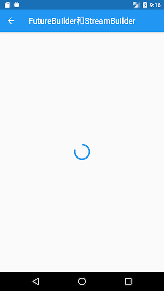

7.6 异步UI更新（FutureBuilder、StreamBuilder）
很多时候我们会依赖一些异步数据来动态更新UI，比如在打开一个页面时我们需要先从互联网上获取数据，在获取数据的过程中我们显示一个加载框，等获取到数据时我们再渲染页面；又比如我们想展示Stream（比如文件流、互联网数据接收流）的进度。当然，通过 StatefulWidget 我们完全可以实现上述这些功能。但由于在实际开发中依赖异步数据更新UI的这种场景非常常见，因此Flutter专门提供了FutureBuilder和StreamBuilder两个组件来快速实现这种功能。
7.6.1 FutureBuilder
FutureBuilder会依赖一个Future，它会根据所依赖的Future的状态来动态构建自身。我们看一下FutureBuilder构造函数：
FutureBuilder({
this.future,
this.initialData,
required this.builder,
})
-
future：FutureBuilder依赖的Future，通常是一个异步耗时任务。 -
initialData：初始数据，用户设置默认数据。 -
builder：Widget构建器；该构建器会在Future执行的不同阶段被多次调用，构建器签名如下：Function (BuildContext context, AsyncSnapshot snapshot)snapshot会包含当前异步任务的状态信息及结果信息 ，比如我们可以通过snapshot.connectionState获取异步任务的状态信息、通过snapshot.hasError判断异步任务是否有错误等等，完整的定义读者可以查看AsyncSnapshot类定义。另外，
FutureBuilder的builder函数签名和StreamBuilder的builder是相同的。
示例
我们实现一个路由，当该路由打开时我们从网上获取数据，获取数据时弹一个加载框；获取结束时，如果成功则显示获取到的数据，如果失败则显示错误。由于我们还没有介绍在flutter中如何发起网络请求，所以在这里我们不真正去网络请求数据，而是模拟一下这个过程，隔3秒后返回一个字符串：
Future<String> mockNetworkData() async {
return Future.delayed(Duration(seconds: 2), () => "我是从互联网上获取的数据");
}
FutureBuilder使用代码如下：
...
Widget build(BuildContext context) {
return Center(
child: FutureBuilder<String>(
future: mockNetworkData(),
builder: (BuildContext context, AsyncSnapshot snapshot) {
// 请求已结束
if (snapshot.connectionState == ConnectionState.done) {
if (snapshot.hasError) {
// 请求失败，显示错误
return Text("Error: ${snapshot.error}");
} else {
// 请求成功，显示数据
return Text("Contents: ${snapshot.data}");
}
} else {
// 请求未结束，显示loading
return CircularProgressIndicator();
}
},
),
);
}
运行结果如图7-9、7-10所示：

注意：示例的代码中，每次组件重新build 都会重新发起请求，因为每次的 future 都是新的，实践中我们通常会有一些缓存策略，常见的处理方式是在 future 成功后将 future 缓存，这样下次build时，就不会再重新发起异步任务。
上面代码中我们在builder中根据当前异步任务状态ConnectionState来返回不同的widget。ConnectionState是一个枚举类，定义如下：
enum ConnectionState {
/// 当前没有异步任务，比如[FutureBuilder]的[future]为null时
none,
/// 异步任务处于等待状态
waiting,
/// Stream处于激活状态（流上已经有数据传递了），对于FutureBuilder没有该状态。
active,
/// 异步任务已经终止.
done,
}
注意，ConnectionState.active只在StreamBuilder中才会出现。
7.6.2 StreamBuilder
我们知道，在Dart中Stream 也是用于接收异步事件数据，和Future 不同的是，它可以接收多个异步操作的结果，它常用于会多次读取数据的异步任务场景，如网络内容下载、文件读写等。StreamBuilder正是用于配合Stream来展示流上事件（数据）变化的UI组件。下面看一下StreamBuilder的默认构造函数：
StreamBuilder({
this.initialData,
Stream<T> stream,
required this.builder,
})
可以看到和FutureBuilder的构造函数只有一点不同：前者需要一个future，而后者需要一个stream。
示例
我们创建一个计时器的示例：每隔1秒，计数加1。这里，我们使用Stream来实现每隔一秒生成一个数字:
Stream<int> counter() {
return Stream.periodic(Duration(seconds: 1), (i) {
return i;
});
}
StreamBuilder使用代码如下：
Widget build(BuildContext context) {
return StreamBuilder<int>(
stream: counter(), //
//initialData: ,// a Stream<int> or null
builder: (BuildContext context, AsyncSnapshot<int> snapshot) {
if (snapshot.hasError)
return Text('Error: ${snapshot.error}');
switch (snapshot.connectionState) {
case ConnectionState.none:
return Text('没有Stream');
case ConnectionState.waiting:
return Text('等待数据...');
case ConnectionState.active:
return Text('active: ${snapshot.data}');
case ConnectionState.done:
return Text('Stream 已关闭');
}
return null; // unreachable
},
);
}
读者可以自己运行本示例查看运行结果。注意，本示例只是为了演示StreamBuilder的使用，在实战中，凡是UI会依赖多个异步数据而发生变化的场景都可以使用StreamBuilder。